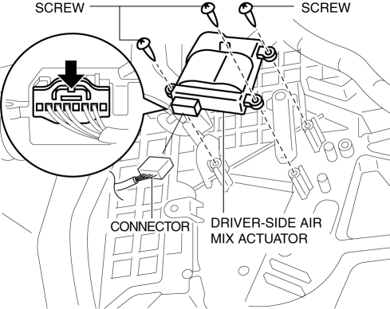
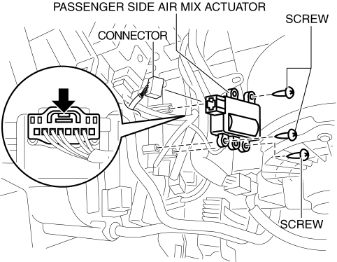

< Previous
Next >
2014 -
Mazda6 -
HVAC
AIR MIX ACTUATOR REMOVAL/INSTALLATION [FULL-AUTO AIR CONDITIONER]
Driver-side
1. Disconnect the negative battery cable. (See NEGATIVE BATTERY CABLE DISCONNECTION/CONNECTION [SKYACTIV-G 2.5].)
2. Remove the following parts: a. Side wall (driver-side) (See SIDE WALL REMOVAL/INSTALLATION.)
b. Front heat duct (driver-side) (See FRONT HEAT DUCT REMOVAL/INSTALLATION.)
3. Disconnect the air mix actuator connector.

4. Remove the screw.
5. Remove the driver-side air mix actuator.
6. Install in the reverse order of removal.
Passenger-side
1. Disconnect the negative battery cable. (See NEGATIVE BATTERY CABLE DISCONNECTION/CONNECTION [SKYACTIV-G 2.5].)
2. Remove the following parts: a. Glove compartment (See GLOVE COMPARTMENT REMOVAL/INSTALLATION.)
b. Dashboard under cover (See DASHBOARD UNDER COVER REMOVAL/INSTALLATION.)
c. Side wall (passenger-side) (See SIDE WALL REMOVAL/INSTALLATION.)
d. Front heat duct (passenger-side) (See FRONT HEAT DUCT REMOVAL/INSTALLATION.)
3. Disconnect the air mix actuator connector.

4. Remove the screw.
5. Remove the passenger-side air mix actuator.
6. Install in the reverse order of removal.
< Previous
Next >
© 2012 Mazda North American Operations, U.S.A.